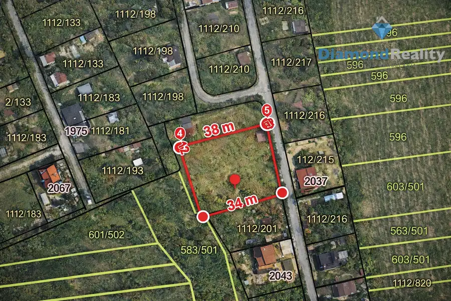
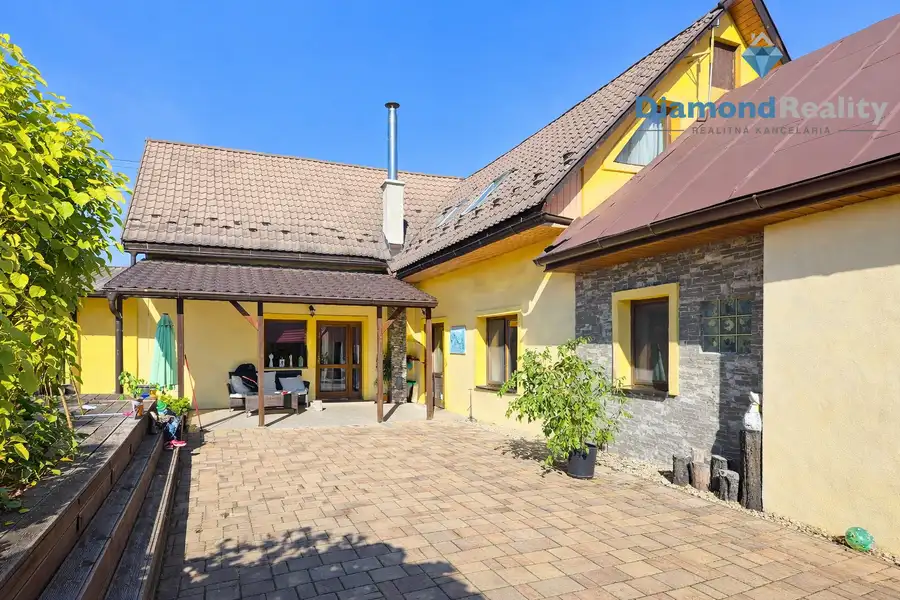
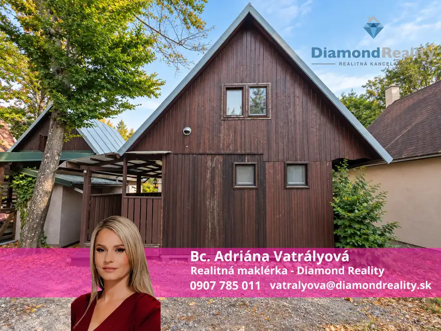
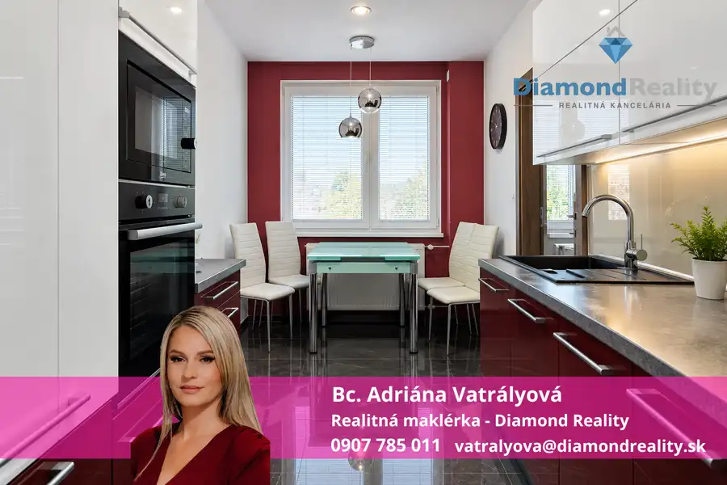
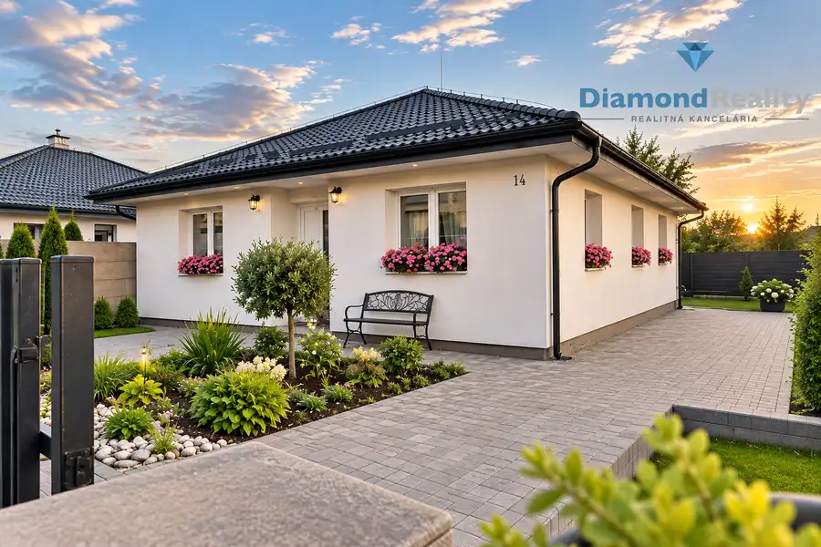
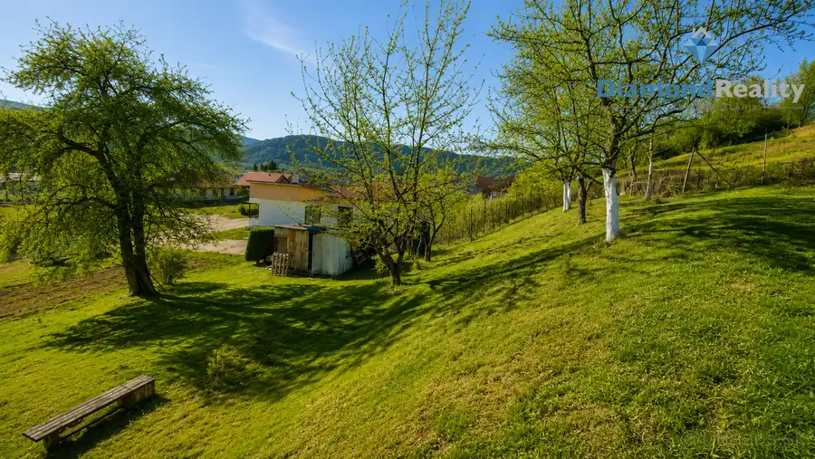
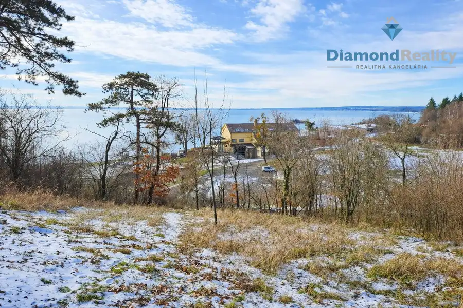
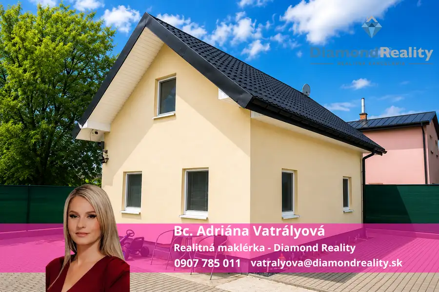

Aktuálna ponuka
Nehnuteľnosti, ktoré ponúkam
12 nehnuteľností na predaj a prenájom. Vyberte typ, alebo napíšte lokalitu.
12 z 12 ponúk
 BytNové10
185 000 €Na predaj 1+1 Apartmán v rezorte TWILIGHT, Severný Cyprus
Reality
2-izbový60 m²
🌴 EXKLUZÍVNE NA PREDAJ – Apartmány a luxusné vily v rezorte TWILIGHT, Severný CyprusObjavte jedinečný rezidenčný projekt TWILIGHT, ktorý sa nachádza…
BytNové10
185 000 €Na predaj 1+1 Apartmán v rezorte TWILIGHT, Severný Cyprus
Reality
2-izbový60 m²
🌴 EXKLUZÍVNE NA PREDAJ – Apartmány a luxusné vily v rezorte TWILIGHT, Severný CyprusObjavte jedinečný rezidenčný projekt TWILIGHT, ktorý sa nachádza…
 BytNové
177 000 €Na predaj 2 izbový byt / Dargovských hrdinov / Košice III.
Dargovských hrdinov, Košice
2-izbový53 m²
2-IZBOVÝ BYT S POTENCIÁLOM – KOŠICE, DARGOVSKÝCH HRDINOVBc. Adriána Vatrályová zo spoločnosti Diamond Reality Vám ponúka na predaj priestranný…
BytNové
177 000 €Na predaj 2 izbový byt / Dargovských hrdinov / Košice III.
Dargovských hrdinov, Košice
2-izbový53 m²
2-IZBOVÝ BYT S POTENCIÁLOM – KOŠICE, DARGOVSKÝCH HRDINOVBc. Adriána Vatrályová zo spoločnosti Diamond Reality Vám ponúka na predaj priestranný…
 BytNové10
249 990 €Na predaj PRAŽSKÝ 3 izbový byt s lodžiou - Lomonosovova ulica, Košice - Juh
Juh, Košice
3-izbový68 m²5. podlažie
🏡 EXKLUZÍVNE | Priestranný 3-izbový pražský byt s veľkou zasklenou lodžiou | Košice – Juh, Lomonosovova ulica ✨💎 Bc. Adriána Vatrályová z Diamond…
BytNové10
249 990 €Na predaj PRAŽSKÝ 3 izbový byt s lodžiou - Lomonosovova ulica, Košice - Juh
Juh, Košice
3-izbový68 m²5. podlažie
🏡 EXKLUZÍVNE | Priestranný 3-izbový pražský byt s veľkou zasklenou lodžiou | Košice – Juh, Lomonosovova ulica ✨💎 Bc. Adriána Vatrályová z Diamond…

Pozemok2 48 000 €Na predaj záhrada s chatkou, Ku Gederu, Košická nová Ves Košická Nová Ves, Košice 407 m² Hľadáte miesto na oddych, záhradkárčenie alebo víkendový únik z mesta?Ponúkame Vám na predaj záhradu s chatkou v obľúbenej a vyhľadávanej… Pozemok3
48 500 €Na predaj 2 parcely / záhrady , Seňa, Košice - okolie
Seňa
850 m²
Na predaj dve atraktívne záhradné parcely v obci SeňaHľadáte miesto na oddych, záhradkárčenie alebo investíciu do budúcnosti? Ponúkame na predaj dve…
Pozemok3
48 500 €Na predaj 2 parcely / záhrady , Seňa, Košice - okolie
Seňa
850 m²
Na predaj dve atraktívne záhradné parcely v obci SeňaHľadáte miesto na oddych, záhradkárčenie alebo investíciu do budúcnosti? Ponúkame na predaj dve…

Dom10 455 000 €Na predaj priestranný rodinný dom, Valaliky, Košice - okolie Valaliky 300 m² Bc. Adriána Vatrályová a Diamond Reality Vám ponúka na predaj dvojpodlažný, dvojgeneračný rodinný dom nachádzajúci sa v pokojnej a tichej lokalite…
Chalupa, rekreačný domček10 78 000 €Na predaj drevená chata / Vinianske jazero / Michalovce Vinné 52 m² 🌿🏡 LETO NA VLASTNEJ CHATE PRI VINIANSKOM JAZERE!☀️ VLASTNÁ CHATA • POZEMOK V OV • BLÍZKO VODY • POKOJ PRI LESE • 2 PARKOVACIE MIESTAPredstavte si…
Byt9 175 000 €Na predaj 4 izbový byt s lodžiou / Zakarpatská / Michalovce Michalovce 4-izbový80 m²5. podlažie 🏡 NA PREDAJ – 4-IZBOVÝ BYT PO KOMPLETNEJ REKONŠTRUKCII | ZAKARPATSKÁ ULICA, MICHALOVCE✨ 80 m² • VEĽKÝ BALKÓN • KOMPLETNÁ REKONŠTRUKCIA • 5. POSCHODIE…
Dom10 365 000 €Na predaj rodinný dom / Teriakovce / Prešov Teriakovce 104 m² 🏡 NA PREDAJ – MODERNÝ 4-IZBOVÝ BUNGALOV V TERIAKOVCIACH✨ NOVOSTAVBA • BEZ ĎALŠÍCH INVESTÍCIÍ • VEĽKÁ TERASA • SLNEČNÝ POZEMOKHľadáte nové bývanie, do…
Pozemok4 199 999 €Na predaj stavebný pozemok, Haniska pri Prešove, Prešov Haniska 1475 m² 🌿 Jedinečný stavebný pozemok s výhľadom – 1 475 m² | Haniska pri PrešoveBc. Adriána Vatrályová z Diamond Reality Vám ponúka na predaj výnimočný…
Pozemok3 108 000 €Na predaj pozemok,Medvedia hora,Zemplínska Šírava,Michalovce Kaluža 349 m² POZEMOK S KRÁSNYM VÝHĽADOM NA ZEMPLÍNSKU ŠÍRAVU – MEDVEDIA HORAPonúkame na predaj stavebný pozemok o výmere 349 m², vhodný na výstavbu rekreačnej…
Chalupa, rekreačný domček10 159 990 €Celoročná chata na predaj, Zemplínska Šírava, Kamenec Kaluža 100 m² 🏡 Chata na predaj – Zemplínska Šírava, nad časťou KamenecVôňa prírody, dni plné pohody pri bazéne a večery pri praskajúcom ohni pod hviezdnou…Tomuto výberu zatiaľ nezodpovedá žiadna ponuka. Napíšte mi, čo hľadáte.